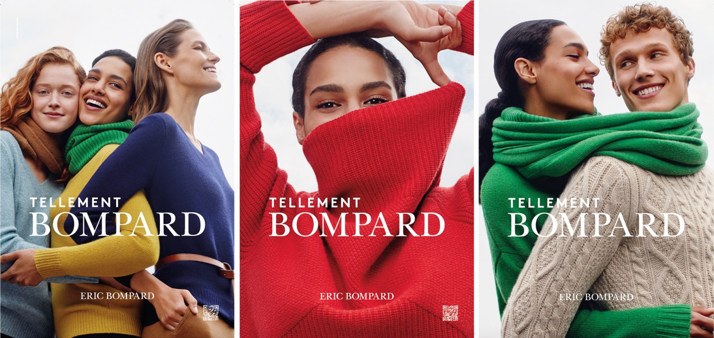

Je m'appelle Lovisa mais cela se prononce Louvissa. Je suis acutellement en alternance à Kedge Business School en Master 2 Marketing Digital et Data. Je travaille chez Eric Bompard en tant qu'assistante chef de projet CRM.
Eric Bompard est une entreprise de cachemire haut de gamme qui propose des pulls en cachemire de Mongolie. La marque met en avant un savoir faire français. Découvrez 👇
 ERIC BOMPARD2022 - 2023 : Assistante Chef de projet CRM chez Eric Bompard
Je possède plusieurs passions dans ma vie. Tout d'abord, je suis passionnée de voyage. J'ai eu la change de découvrir l'Inde, l'Australie, le Mexique et également pas mal de pays en Europe. Parce que les voyages sont des sources de souvenirs, j'adore utiliser Instagram pour partager mes aventures à travers le monde. Enfin, je suis passionnée d'art. Je pense que cette passion vient des voyages et de cette envie de découvrir les différentes cultures.